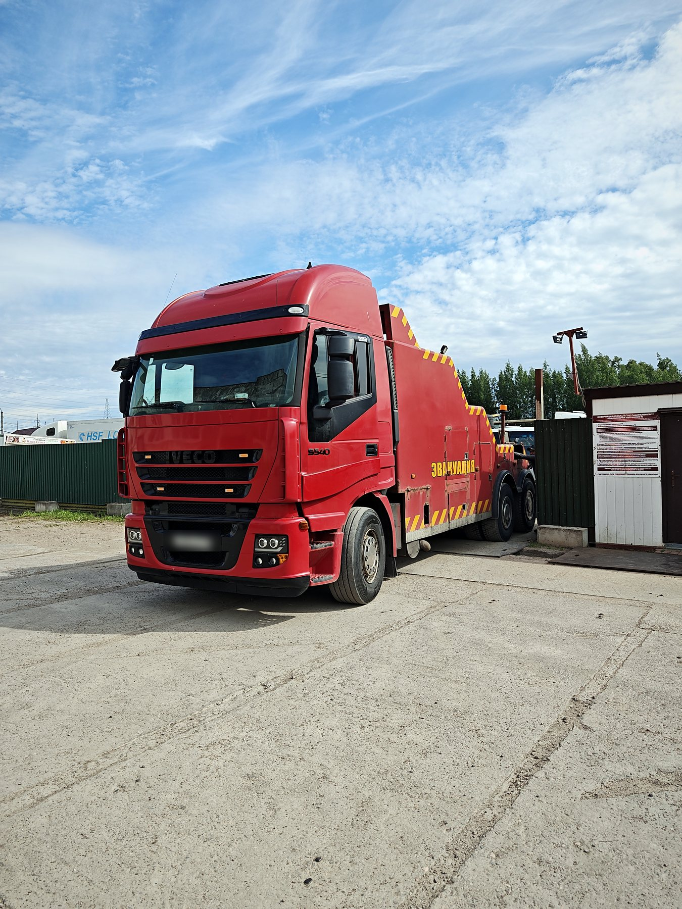

Эвакуатор в Московском районе 24/7
В каждом районе Петербурга работают 2–3 наших экипажа. Ориентир подачи в районе 20–30 минут, точное время назовём по адресу.
- Работаем 24/7
- Подача в районе 20–30 мин
- Цена до выезда
Диспетчер ответит круглосуточно и назовёт стоимость до выезда.
Сложный случай? Пришлите фото, оценим стоимость: WhatsApp · Telegram · Max

- Где работаем
- Московский проспект, Парк Победы, Звёздная, Московская площадь, район аэропорта Пулково
- Основные дороги
- Московский проспект, Пулковское и Московское шоссе, КАД
Цены
Особенности района
- Везём к аэропорту Пулково и обратно, например, если машина не завелась на парковке после поездки.
- Московский проспект и Пулковское шоссе ведут прямо к КАД: удобно, если нужно за город.
- Много сервисов и дилерских центров. Скажите, куда везти, или подскажем ближайший.
Какая техника приедет
Частые вызовы в районе
Как мы работаем в районе
Московский район вытянут вдоль Московского проспекта от Обводного канала до Пулково. Отсюда удобно выезжать на КАД и Пулковское шоссе, поэтому мы часто везём машины из района за город и обратно. Если вы у аэропорта, назовите терминал или парковку.
Можно поехать вместе с машиной в кабине эвакуатора. Оплата после доставки, по сумме, которую диспетчер назвал до выезда.
Отзывы клиентов
★★★★★ Смотреть все отзывы на Яндексе ›«Эвакуатор прибыл очень быстро, водитель был профессионален и вежлив. Машину доставили целой и невредимой. Мне очень понравилось.»
«Лучшая служба эвакуации, с которой я когда-либо сталкивался! Быстро реагируют. Эвакуатор приехал вовремя. Рекомендую»
«Водитель был очень профессиональным и компетентным. Машину доставили в целости и сохранности.»
Частые вопросы
Через сколько приедете в Московском районе?
Ориентир подачи в Московском районе 20–30 минут. В час пик может быть дольше, ночью чаще быстрее. Точное время диспетчер назовёт по адресу.
Сколько стоит?
Эвакуатор со сдвижной платформой от 3 500 ₽ + маршрут от 80 ₽/км, манипулятор от 8 000 ₽ + 100 ₽/км. Точную сумму диспетчер назовёт до выезда, и она не меняется, если на месте всё как в описании.
Можно поехать вместе с машиной?
Да, в кабине эвакуатора можно поехать вместе с водителем.
Кто отвечает, если машину повредят?
Мы. Ответственность компании застрахована, за автомобиль отвечаем от погрузки до выгрузки.
Заберёте машину с парковки аэропорта Пулково?
Да. Назовите парковку и ряд, если знаете, и уточните, как эвакуатору проехать на территорию.
Нужен эвакуатор сейчас?
Круглосуточно. Стоимость назовём до выезда.